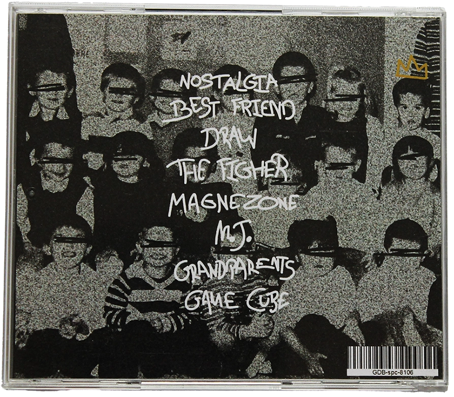
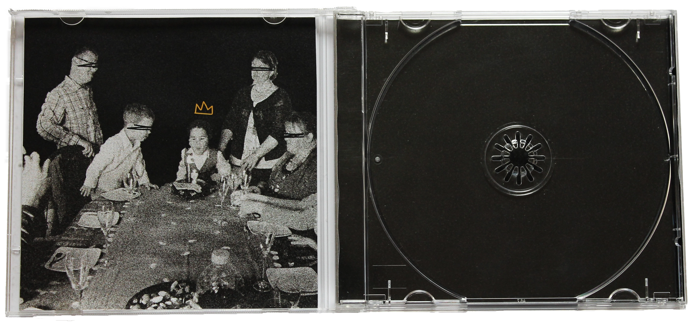

Nostalgia
Projet personnel
Photoshop, Illustrator, Indesign
2025
Nostaglia est un projet personnel qui consistait à créer une cover pour un album fictif, Nostaglia, un album qui appelle à la nostalgie, à l'enfance et à l'innocence.
L'ambiance du projet se base sur la nostalgie et l'enfance, c'est pour cela que j'ai utilisé des créations que j'ai faites étant petit, ainsi que du grain pour renforcer le coté ancien et nostalgique. De plus, la typographie manuscrite, un peu mal dessinée, fais écho avec une écriture d'enfant, imparfaite mais franche, renforcant la dimension de l'enfance et de l'insoucience.
Mon objectif à la fin du projet été de déployé ma création physiquement à travers un CD. Pour cette étape, j'ai utilisé Indesign pour avoir des mesures précises qui s'adapte au format CD.